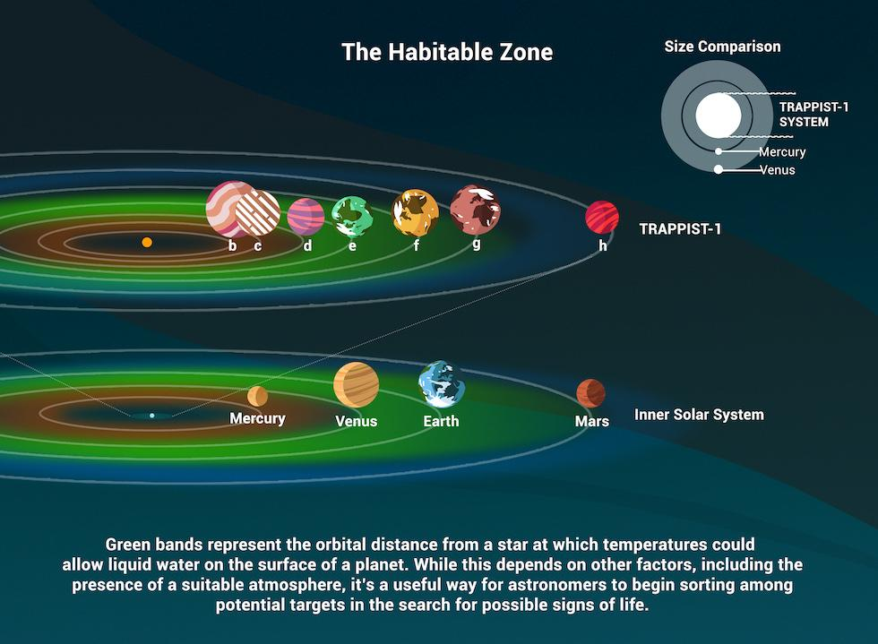
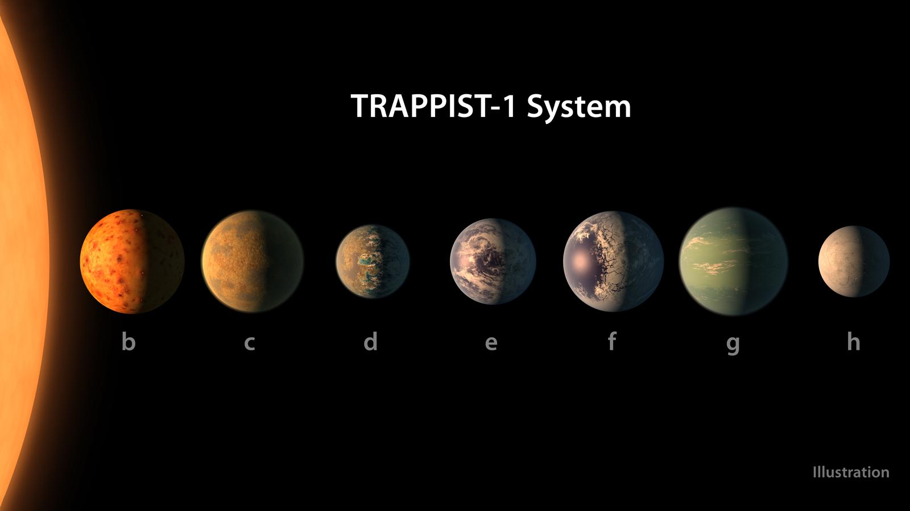
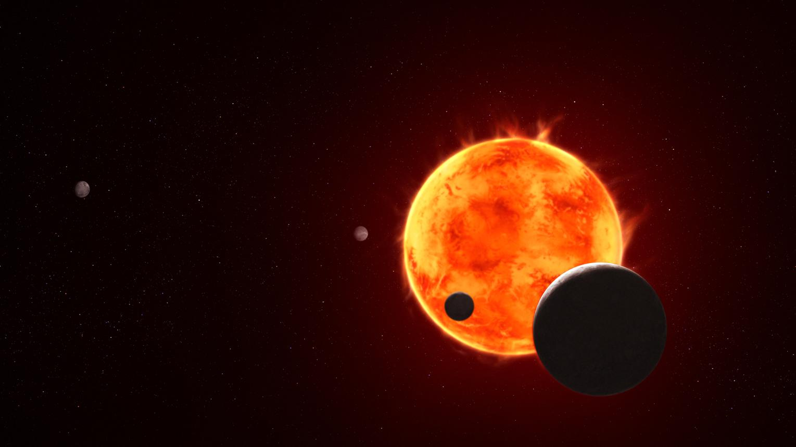
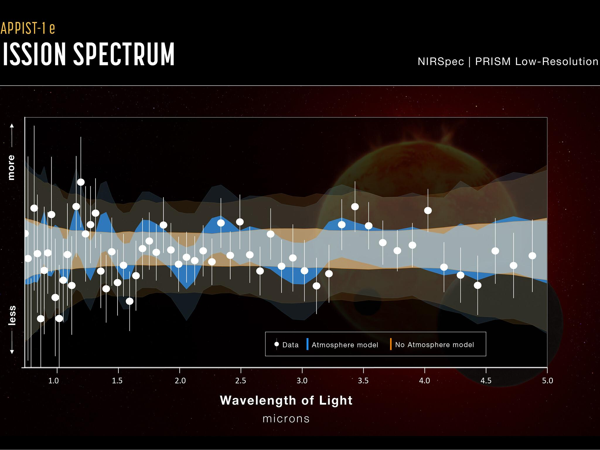

Как ищут жизнь: биосигнатуры и обитаемые зоны
Один из самых важных вопросов современной науки — существует ли жизнь за пределами Земли? Чтобы приблизиться к ответу, астрономы исследуют далёкие планеты, анализируют их атмосферы и ищут признаки, которые могут указывать на существование живых организмов.
Но как можно обнаружить жизнь на планете, до которой невозможно добраться? Для этого учёные используют специальные методы наблюдения и ищут так называемые биосигнатуры.
1. Где искать жизнь? Зона обитаемости
Одним из первых критериев при поиске потенциально обитаемых планет является их расположение относительно родительской звезды.
Зона обитаемости — это область вокруг звезды, в которой на поверхности планеты при подходящих атмосферных условиях может существовать жидкая вода.
Если планета находится слишком близко к звезде, вода может испаряться. Если слишком далеко — поверхность может быть настолько холодной, что вода будет существовать преимущественно в виде льда. Поэтому эту область иногда называют «зоной Златовласки»: условия в ней не слишком горячие и не слишком холодные.

Однако нахождение в зоне обитаемости ещё не означает, что планета пригодна для жизни. Важны также состав атмосферы, температура, давление и другие условия. Например, у планеты может вообще не быть атмосферы, необходимой для сохранения жидкой воды на поверхности.
2. TRAPPIST-1 — семь миров у одной звезды
Одной из самых интересных для астрономов является система TRAPPIST-1, расположенная примерно в 40 световых годах от Земли.
Вокруг небольшой холодной звезды вращаются семь каменистых планет, размеры которых сопоставимы с размерами Земли. Некоторые из них находятся в зоне обитаемости своей звезды.

Эта система особенно интересна тем, что учёные могут наблюдать прохождение планет перед своей звездой. Такие события помогают определять размеры планет, а также исследовать их атмосферы.
TRAPPIST-1 — не доказательство существования внеземной жизни, а один из примеров системы, в которой астрономы могут искать потенциально подходящие для неё условия.
3. Что такое биосигнатуры?
Биосигнатуры — это признаки, которые могут указывать на существование жизни сейчас или в прошлом. Они могут представлять собой определённые вещества, химические соединения, структуры или особенности окружающей среды, возникновение которых связано с деятельностью живых организмов.
На Земле жизнь оставляет множество следов. Например, окаменелости свидетельствуют о существовании древних организмов, а некоторые микроорганизмы изменяют химический состав окружающей среды.
При исследовании других планет учёные ищут похожие признаки. Особое внимание уделяется составу атмосферы.
К потенциальным биосигнатурам относятся:
- Кислород — на Земле его большое количество в атмосфере связано с деятельностью живых организмов.
- Озон — образуется из кислорода и может быть косвенным признаком его присутствия.
- Метан — на Земле его производят некоторые микроорганизмы, однако он может возникать и в результате неживых геологических процессов.
- Вода и другие химические соединения — помогают оценить условия на планете и особенности её атмосферы.
Важно понимать: обнаружение одного такого вещества ещё не доказывает наличие жизни. Некоторые соединения могут образовываться и без участия организмов. Поэтому учёные ищут сочетания признаков и проверяют возможные альтернативные объяснения.
4. Как телескопы исследуют атмосферы планет?
Один из способов изучения атмосферы экзопланеты связан с прохождением планеты перед своей звездой. Это явление называется транзитом.
Когда планета проходит перед звездой, часть её света может пройти через атмосферу планеты. Разные газы поглощают свет на определённых длинах волн. В результате в полученном спектре появляются характерные особенности.

Изучая эти особенности, астрономы могут определять, какие вещества присутствуют в атмосфере далёкого мира. Этот метод называется трансмиссионной спектроскопией.

Для таких наблюдений используется, в частности, космический телескоп James Webb. Он способен исследовать свет далёких планет и находить некоторые особенности их атмосфер.
5. Почему обнаружить жизнь так сложно?
Даже если учёные обнаружат на далёкой планете кислород, метан или другие потенциальные биосигнатуры, это ещё не станет окончательным доказательством жизни.
Например, некоторые газы могут возникать в результате вулканической активности, химических реакций или воздействия излучения звезды. Поэтому необходимо учитывать не только состав атмосферы, но и условия на самой планете, её звезду и возможные неживые источники веществ.
Кроме того, расстояния до экзопланет настолько велики, что даже самые мощные телескопы получают от них очень слабый сигнал. Иногда для изучения одной планеты требуются многочисленные наблюдения.
6. Нашли ли учёные внеземную жизнь?
Пока нет. На сегодняшний день учёные не обнаружили подтверждённых доказательств существования жизни за пределами Земли.
Тем не менее поиск продолжается. Исследуются экзопланеты, Марс, ледяные спутники Юпитера и Сатурна, а также другие объекты Солнечной системы, где могут существовать условия для жизни.
Возможно, однажды телескопы обнаружат сочетание химических признаков, которое позволит учёным приблизиться к ответу на один из главных вопросов человечества: одни ли мы во Вселенной?
Почему это важно?
Поиск внеземной жизни помогает не только исследовать другие миры, но и лучше понимать саму Землю. Изучая условия, в которых может существовать жизнь, учёные узнают больше о её происхождении, разнообразии и возможных границах.
И даже если пока мы не нашли ни одного подтверждения внеземной жизни, каждый новый телескоп и каждое новое открытие приближают нас к пониманию того, насколько распространена жизнь во Вселенной.